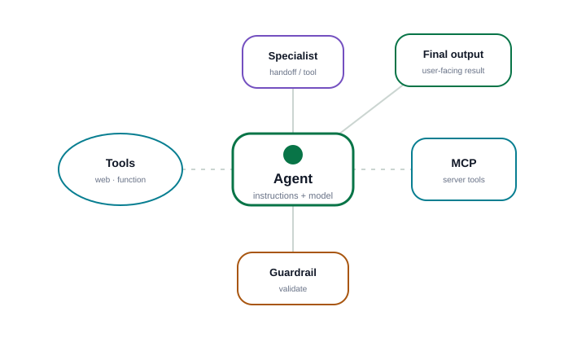
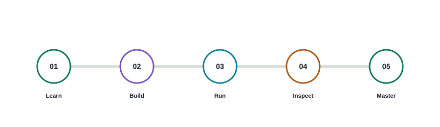
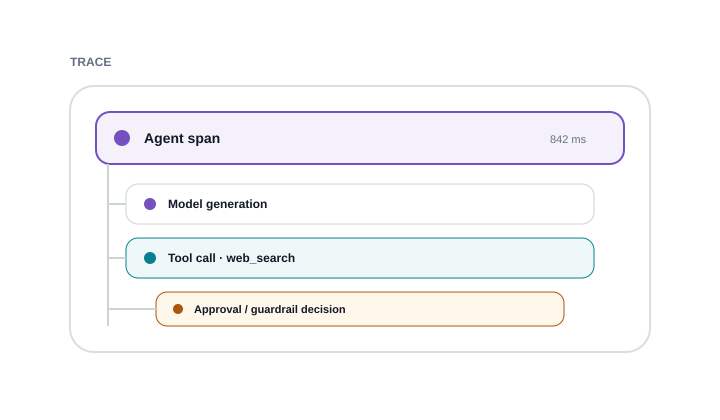

01
Agent identity & instructions
Give the agent a clear name and define what it should do.
Keep this focused on role, goals, boundaries and how the agent should respond.
Agents SDK Learning Lab · Responses API concepts
YOUR LEARNING SPACE
Learn the concepts, configure a real Blueprint, run a safe local simulation, inspect the trace, and prove each skill.

LEARNING HOME
See where you are, what you built, and the next skill to prove.
YOUR LEARNING PATH

AGENT WORKBENCH
Configure the core agent building blocks, then watch the blueprint update instantly across the training platform.
BEGINNER START
Explain what you want in normal language. This local lab will propose a training Blueprint without contacting an API.
You described the behavior in plain language. The lab translated that intent into a proposed agent configuration.
A readable map of the current Blueprint. Select a row to jump back to the visual setting.
This JSON teaches the configuration shape. It is not an official OpenAI API request body.
Code Studio generates the synchronized Agents SDK example and explains what changed.
LIVE BLUEPRINT MAP
Every enabled capability appears here so you can connect configuration choices to architecture.
BLUEPRINT MAP
Tap any block to edit that part of the agent.
01
Give the agent a clear name and define what it should do.
Keep this focused on role, goals, boundaries and how the agent should respond.
02
Choose the model used by this training blueprint.
03
Select the capabilities available to the agent.
Define what the model sees, the arguments it may choose, and the local result returned during simulation.
The schema tells the model which inputs the tool accepts.
Simple training rule. If it cannot be evaluated, the simulation asks for approval.
MCP lets an agent use tools exposed by a server. This page simulates discovery only.
04
Add checks around agent input and final output.
05
Let this agent transfer the conversation to a specialist.
06
Keep working context available across turns in the training run.
07
Choose how the final response should be shaped.
Define the object shape the training simulation should return.
This builder is a local training surface. It teaches the main SDK concepts but does not create, deploy or call a live OpenAI agent.
CONFIGURATION TRAINING
Compare a weak setup with a clearer one, then see how behavior, tool use, trace, and output change.
INTERACTIVE SANDBOX
Watch a training run unfold step by step, pause for human approval, then inspect the technical event payloads underneath.
Configure instructions, tools, environments and triggers
Training representation only. This standalone HTML never creates a remote runtime or container.
Each failure changes the timeline, trace, and final output.
sess_idlegpt-6-astra
INPUT
Start a simulation to watch the user request, agent work, tools, approvals and final response unfold in order.
The agent wants to call a tool that requires human approval. Review the request before the run continues.
call_x9421{
"customer_id": "9421"
}
Training model: the Agents SDK surfaces an interruption, the result can be converted to RunState, and the same run resumes after approve or reject.
OUTPUT
Select a timeline step or event to inspect its payload.
Simulated events only. No live API calls or external actions.
RUN DIAGNOSTICS
Inspect the latest training run as a hierarchy of agent, tool, handoff, guardrail and approval spans.
DEBUGGING WORKFLOW
No run selected yet.

sess_idle·—
Training trace only. Span hierarchy and durations are simulated from the local run to teach inspection patterns.
SYSTEM DESIGN LAB
Compare orchestration patterns, visualize agent relationships, and test where guardrails stop or allow a run.
AGENTS SDK CONCEPT MAP
These visual roles mirror the concepts used throughout the lab. The diagram itself remains a training representation.
Switch patterns to see how control, delegation, handoffs and approvals change the flow.
Add nodes, connect them, and validate the training architecture.
Run safe and blocked scenarios to see which stage stops the workflow.
Training representation: the Agents SDK provides a higher-level agent runtime over model calls, tools, guardrails, handoffs, sessions, approvals and traces.
BLUEPRINT CODE WORKSPACE
Generated code stays synchronized with the Agent Blueprint. Apply a preset here to push a configuration back into the visual Builder.
VISUAL → CONFIG → CODE
Builder changes stay synchronized with the generated SDK example so you can connect a visual choice to the code it adds.
agent_blueprint.pyVERIFIED SDK EXAMPLE// Generating code...GUIDED PRACTICE
Complete practical missions across Builder, Simulator, Trace, Design and Code Studio. Progress is saved locally.
SKILL JOURNEY
KNOWLEDGE CHECK
Test your understanding of Agents SDK tools, approvals, orchestration, sessions and traces.